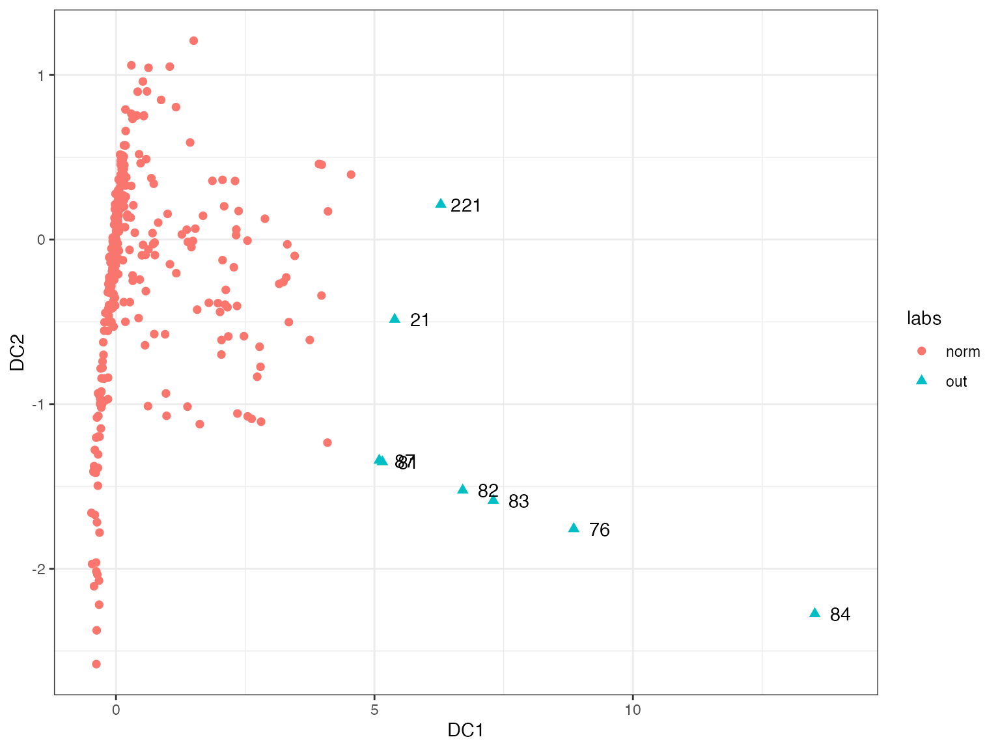
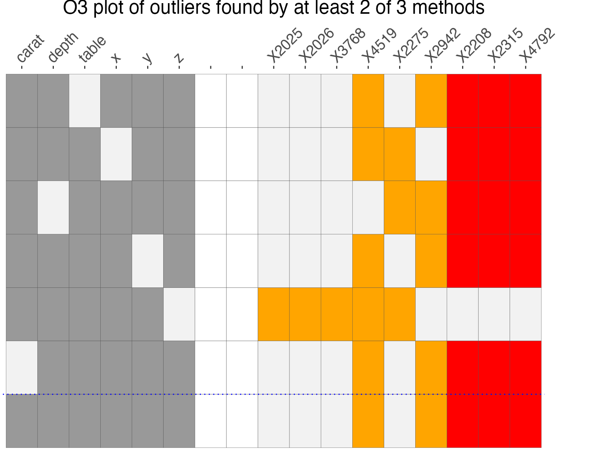

Introduction to dobin
Sevvandi Kandanaarachchi
dobin.RmdDOBIN (Distance based Outlier BasIs using Neighbours) (Kandanaarachchi and Hyndman 2021) is an approach to select a set of basis vectors tailored for outlier detection. DOBIN has a strong mathematical foundation and can be used as a dimension reduction tool for outlier detection. The R package dobin computes this basis. The DOBIN basis is constructed so that the first basis vector is in the direction yielding the highest knn distance and the second basis vector is in the direction giving the second highest knn distance and so on. Details on the construction of DOBIN can be found in (Kandanaarachchi and Hyndman 2021).
Installation
You can install the version on CRAN:
install.packages("dobin")Or you can install the development version from GitHub.
install.packages("devtools")
devtools::install_github("sevvandi/dobin")Example 1
We consider the dataset Election2005 from the R package mbgraphic for our example. This dataset is discussed in (Unwin 2019a). The figure below shows the space spanned by the first two DOBIN vectors. In this space we see that observation 84 is the most outlying observation followed by observations 76, 83, 82, 221, 21, 87 and 81.
data <- mbgraphic::Election2005[, c(6, 10, 17, 28)]
names(data) <- c("Area", "Population_density", "Birthrate", "Car_ownership")
out <- dobin(data, frac=0.9, norm=3)
labs <- rep("norm", dim(out$coords)[1])
inds <- which(out$coords[, 1] > 5)
labs[inds] <- "out"
df <- as.data.frame(out$coords[, 1:2])
colnames(df) <- c("DC1", "DC2")
df2 <- df[inds, ]
ggplot(df, aes(x=DC1,y=DC2)) + geom_point(aes(shape=labs, color=labs), size=2 ) + geom_text(data=df2, aes(DC1, DC2, label = inds), nudge_x = 0.5) + theme_bw()
As the first DOBIN vector is useful in distinguishing outliers we explore its coefficients.
out$vec[ ,1]
#> NULLWe see that the second variable which is population density is the main contributor to outliers in this dataset. Next we draw the O3 plot using OutliersO3 package (Unwin 2019b). O3 plots are introduced in (Unwin 2019a). The O3 plot can identify outliers by using 6 different outlier detection methods. Therefore, it acts as an ensemble method. In addition, it also identifies outliers in axes-parallel subspaces.
O3y <- OutliersO3::O3prep(data, method=c("HDo", "PCS", "BAC", "adjOut", "DDC", "MCD"))
O3y1 <- OutliersO3::O3plotM(O3y)
O3y1$gO3 The O3 plot is organised in such a way that the outlyingness of the
observations increase to the right. The columns on the left indicate the
variables, the columns on the right indicate the observations, the rows
specify the axis parallel subspaces and the colours depict the number of
methods that identify each observation in each subspace as an outlier.
From this plot we see that observation \(X84\) is identified as an outlier by \(5\) methods in \(5\) subspaces, \(4\) methods in \(2\) subspaces, \(3\) methods in \(1\) subspace and by \(1\) method in \(1\) subspace. \(X84\) is arguably the most outlying
observation in this dataset. The observations \(X83\), \(X76\), \(X82\) are also identified as outliers by
\(5\) methods in the dimension of
population density. They are also identified as outliers by multiple
methods in different subspaces.
The O3 plot is organised in such a way that the outlyingness of the
observations increase to the right. The columns on the left indicate the
variables, the columns on the right indicate the observations, the rows
specify the axis parallel subspaces and the colours depict the number of
methods that identify each observation in each subspace as an outlier.
From this plot we see that observation \(X84\) is identified as an outlier by \(5\) methods in \(5\) subspaces, \(4\) methods in \(2\) subspaces, \(3\) methods in \(1\) subspace and by \(1\) method in \(1\) subspace. \(X84\) is arguably the most outlying
observation in this dataset. The observations \(X83\), \(X76\), \(X82\) are also identified as outliers by
\(5\) methods in the dimension of
population density. They are also identified as outliers by multiple
methods in different subspaces.
Example 2
We consider the diamonds dataset in ggplot2 R package.
data(diamonds, package="ggplot2")
data <- diamonds[1:5000, c(1, 5, 6, 8:10)]
out <- dobin(data, frac=0.9, norm=3)
autoplot(out)
kk <- min(ceiling(dim(data)[1]/10),25)
knn_dist <- FNN::knn.dist(out$coords[, 1:3], k = kk)
knn_dist <- knn_dist[ ,kk]
ord <- order(knn_dist, decreasing=TRUE)
ord[1:4]
#> [1] 4519 2315 4792 2208The first two DOBIN components highlight the observations 4519, 2315, 2208, 4792 by projecting them away from the rest of the data. This is corroborated by the following O3 plot.
labs <- rep("norm", length(ord))
labs[ord[1:4]] <- "out"
df <- as.data.frame(out$coords[, 1:2])
colnames(df) <- c("DB1", "DB2")
df2 <- df[ord[1:4], ]
ggplot(df, aes(x=DB1,y=DB2)) + geom_point(aes(shape=labs, color=labs), size=2 ) + geom_text(data=df2, aes(DB1, DB2, label = ord[1:4]), nudge_x = 0.5) + theme_bw()
pPa <- O3prep(data, k1=5, method=c("HDo", "PCS", "adjOut"), tolHDo = 0.001, tolPCS=0.001, toladj=0.001, boxplotLimits=10)
pPx <- O3plotM(pPa)
pPx$gO3x + theme(plot.margin = unit(c(0, 2, 0, 0), "cm"))
In both examples, we see that DOBIN highlights the stronger outliers identified by the O3 plot, in a space spanned by the first 2 DOBIN vectors. We note that this is a projection of the original space.
See our website or our paper for more examples.